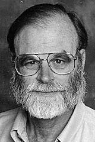

|  |
1998 год James N. Gray (1944-2007) «За основополагающие идеи в области баз данных, исследования обработки транзакций и техническое лидерство в реализации систем» |
Страна: США
Образование: Доктор философии в области информатики, Калифорнийский университет (Беркли), 1969
О лауреате
В 1973 году James Gray принял приглашение от исследовательской лаборатории IBM в Сан-Хосе, где присоединился к проекту, известному как System R. Проект служил основой для индустрии реляционных баз данных. Он играл ведущую роль в этом проекте объединив свой опыт с системами и теорией для создания единого подхода к взаимосвязанным проблемам контроля и восстановления после сбоев. Также он ввёл транзакцию как рабочую единицу: когда деньги переходят с одного банковского счёта на другой, это действие должно оставить базу данных банка в очередном состоянии, независимо от успеха транзакции: были ли деньги переведены, или остались на первоначальном счёте. Gray разработал технологию, которая позволяла параллельно выполнять множество транзакций, а также делать перезагрузку после сбоев при сохранении согласованности базы данных. Позже он помогал интегрировать эту технологию в продукты IBM и начал думать о том, как внедрить транзакции в распределенные сети. Он верил, что модель реляционной базы данных и язык SQL будут надёжной основой для онлайн-приложений, но при этом был обеспокоен тем, что клиенты испытывали трудности при сравнении предложений от различных поставщиков аппаратного и программного обеспечения. Тогда он разработал ориентированные на конечных потребителей оценки производительности и помог создать независимую от поставщиков организацию - Совет по эффективности транзакций для контроля за их беспристрастной реализацией. Это привело к сильной конкуренции между поставщиками и улучшению их продукции.
Ключевые слова: Database, Transaction processing systems
Краткая библиография
| 1. |
Gray, J. N., R. A. Lorie and G. R. Putzolu. "Granularity of locks in a shared data base" In VLDB 1975: Proceedings of the 1st International Conference on Very Large Data Bases, pages 42-451. Association for Computing Machinery, 1975 |
| 2. |
Eswaran, K. P., J. N. Gray, R. A. Lorie, and I. L. Traiger. "The notions of consistency and predicate locks in a database system," Communications of the ACM, Vol.19, Num. 11, pp. 624-633, November 1976. |
| 3. |
Jim Gray, Paul McJones, Mike Blasgen, Bruce Lindsay, Raymond Lorie, Tom Price, Franco Putzolu, and Irving Traiger. The recovery manager of the System R database manager. ACM Computing. Surveys, Vol. 13, Num. 2, pp. 223-242, 1981. |